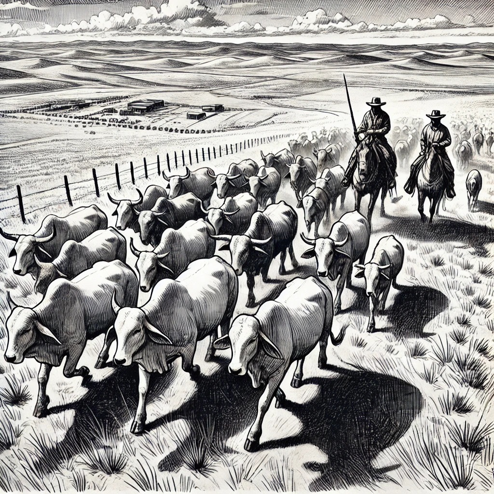

Ñutag: Etiqueta Inteligente para Ganado
Sistema de etiquetas de nueva generación diseñado para revolucionar la gestión ganadera
Localización Precisa
Seguimiento en tiempo real mediante antenas estratégicamente ubicadas
Alertas Sonoras
Notificaciones instantáneas cuando una etiqueta se extravía
Preparado para GPS
Capacidad integrada para seguimiento basado en GPS
Batería de Un Año
Energía sostenible mediante células solares miniatura integradas
Identificación Rápida
Escaneo instantáneo en instalaciones de manejo para una gestión eficiente
Suite Completa de Software
Herramientas integrales de gestión:
- Aplicación de escritorio potente sin conexión
- Plataforma web sincronizada en la nube

